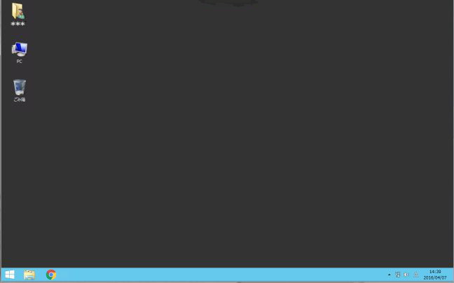

Last-Modified: 2016.04.14
◎ＰＣのハードウェアとプログラム
プログラムは、PCを構成する個々のハードウェアに対する動作指令書である。動作指令である以上は、プログラム作成にあたって、PCのハードウェアを全く知らないわけにはいかない。細かいことはともかく最低限の知識は必要である。低級言語に位置付けられているC言語においては、その度合が強い。詳細は他の授業科目で勉強して貰いたいが、以下に簡単に説明しておく。
○ＣＰＵ（中央演算処理素子、コンピュータの頭脳に相当する）
CPUはコンピュータ全体の動作を制御する。基本的に一つのCPU（シングルコアのCPU）が、命令を一つづつ順番に実行していく逐次処理を想定する（最近はマルチコアのCPUを前提にした並列処理も行われるが本演習では扱わない）。
○記録媒体
・内臓ハードディスク（ＨＤＤ）：中速、大容量（数百GB)、外部記録（電源を切ってもデータが残る）、持運び不可。
・ＵＳＢメモリ： 中速、中容量（数GB～数十GB）、外部記録、持運び可。
・半導体メモリ（ＲＡＭ）：高速、小容量（数GB）、内部記録（電源を切るとデータが消える）、持運び不可。
[注]通常は上記のようにPC本体もしくは外部接続した記録媒体にデータを保存する。最近はクラウド上（ネット上）のドライブ（TUAT CabinetやGoogleドライブなど）を利用することもできる。後者の場合、どこのPCからもデータにアクセスできるので便利である（USBメモリを持ち歩く必要がない）。
○入力装置
・キーボード、・マウス
○出力装置
・液晶ディスプレイ 、・プリンタ
◎Windowsのファイル管理形式
ここでは、本演習で使用する仮想デスクトップのオペレーティングシステムであるWindowsのファイル管理形式について説明する。
１．ファイル
デスクトップ画面上や画面下部タスクバーにあるフォルダアイコンをクリックするとエクスプローラ画面が開き、様々なファルダやファイルが表示される（これらは、農工大のネットワークドライブ上に保存されているファイルである）。それぞれに付けられているファイル名は
（ファイル名).(拡張子）
の形で表されている。ここで、拡張子はファイルの種別を示す目的で使われる。
例
実行ファイル： *.exe
データファイル： *.c （Cのソースファイル)、 *.cpp（C++のソースファイル)
*.gif (画像データファイル)、 *.txt（テキストデータファイル）
*.doc(ドキュメンテーションファイル)
２．フォルダ
記憶装置の１つの媒体に非常に数多くのファイルを保存することができる。しかし、ファイルの数が多くなると、各々のファイルが何のファイルであるかわからなくなり管理上支障をきたす。そこで、関連のあるファイルを一つにまとめフォルダに分けて保存する（フォルダの下に更にサブフォルダを作ることもできる）。
３．デスクトップのフォルダ構成
個人で作成したファイルは、ホームディレクトリ（あるいはホームディレクトリの下のサブフォルダ）に保存するようにする。本演習で用いる仮想デスクトップにはホームディレクトリが二つあるように見える。一つは、
Cドライブの以下の場所にある。
C:\Users\"TUAT-ID"\（仮想デスクトップのホームディレクトリ）
├ WINDOWS
├ MyDocuments (TUATキャビネットフォルダのショートカット）
├ MyMusic ( ゛ ）
‥‥
もう一つは、Zドライブのルートフォルダ（Z:\)である。
Z:\（TUATキャビネットフォルダ）
├ MyDocuments
├ workspace ┬ex1
├ex2
├ex3
‥‥
実はこのZドライブはセンターがクラウド上に用意しているTUATキャビネットフォルダと同じものである。以下に述べる理由で、個人ファイルは、Zドライブに保存することを推奨する。その第一の理由は、キャビネットフォルダはWebブラウザ経由で学外からもアクセスできて使い勝手がよいからである。第二の理由は、Cドライブは仮想端末内の一時的なフォルダであり、端末をログイン/ログオフする度にデータを転送して用意している。無駄な転送をさけるためにも、キャビネットフォルダ（Zドライブ）にデータを保存したほうがよい（同じ理由により、CドライブのMyDocumentsアイコンは、実はZドライブMyDocumentsフォルダのショートカットになっている、実体はZドライブである）。
[注]この後のEclipseの初期設定で、workspaceフォルダの場所を指定する。本演習授業で作成する個々のプロジェクトファイルは、指定したworkspaceの下のサブフォルダ(上記の例では、ex1,ex2,ex3のフォルダ）に保存される。
４．エクスプローラによるファイル操作
エクスプローラ画面上で、以下のようなファイル操作が可能である。
-
ドライブ、フォルダを選択： ドライブやフォルダアイコンをクリック
-
データファイルの表示 ： ファイルアイコンをクリック
-
プログラムファイルの実行 ： ファイルアイコンをクリック
-
ファイルの削除： ファイルアイコンをごみ箱にドラッグ選択（クリックすると色が変わる）=> Deleteキーを押す。
-
ファイルのコピー：①コピー元とコピー先の各々のフォルダ画面を出しておく。②コピー元のファイルを選択（クリックすると色が変わる）、③コピー先のフォルダ画面内に選択したファイルをドラッグ＆ドロップする。
[注] 上記は仮想端末デスクトップ内でのみ可能な操作になる。持ち込みPCのフォルダとまたいで行うことができない。またいだファイル操作は、WEB上のTUATキャビネットを通して行う必要がある。
◎仮想Windowsデスクトップ
WEBブラウザ経由で動作する仮想Windowsデスクトップ環境の下で演習授業を行なう。この仮想Windowsデスクトップには、自分が持ち込んだPC（BYOD:Bring
Your Own Device）からアクセスする。持ち込みPCのOSは、Windows, MacOSX, Linux, Chromeのどれでも構わない（OSに依存しません）。ネットワークに接続できる場所（無線LAN接続できる場所）であれば、学内のどこでも利用できる。持ち込みPCの推奨スペックをあらかじめ確認しておくこと。
接続方法
接続方法の詳細は、センターのマニュアルを参照。
①PCの起動
PCを起動し、農工大のネットワークに接続されていることを確認する。通常は、無線LAN（SSID名：tuatnet）で接続する。
[注] 無線LANに接続できない場合、センターのマニュアルに従って、tuatnetの[ワイヤレスのプロパティ]を再設定する。多くの場合これで接続できるようになる。
②仮想デスクトップへの接続
WEBブラウザ（InternetExplorer、Firefox、Chromeなど）を起動する。ブラウザの検索窓（URLアドレス入力窓）に、
https://mydesk.ecs.tuat.ac.jp/
を入力し
[Enter]を押す。現れた、ログイン画面に、
ユーザＩＤ（TUAT-ID)、およびパスワードを入力、
[ログイン]をクリックする。
仮想デスクトップサービスという名前の以下の画面が現れる。メニューの中から、
[授業用]の該当科目を選んでクリックする。
[注] 演習時間中に接続するときは、
[授業用]の中の担当教員の科目を選ぶ。このメニューは演習時間内のみ表示され（
授業開始15分前から表示される）、時間外は
表示されない。時間外に仮想デスクトップに接続する時は、
[自習用]または、
[自習専用]を選ぶ。
すると、
[授業用]の仮想デスクトップです。仮想デスクトップに接続します。
のメッセージが出る。ここで、
[接続] ボタンをクリックする。
[ユーザプロファイルサービスの処理]、にしばらく時間がかかった後、以下のような仮想デスクトップ画面が立ち上がる。

③仮想デスクトップの切断
面左下の
[スタートボタン]をクリックしてスタート画面を開く。
画面右上の
[電源ボタン]をクリック -> 現れたメニューの
[切断]をクリック。
◎Eclipse によるプログラム開発
プログラム開発の手順
プログラムの作成から実行に至る手順は、①エディタによるソースプログラムの編集、②ビルド（コンパイル&リンク）、③プログラムの実行、となる。②のビルド時にビルドエラーが発生した場合、あるいは、③の実行時に実行エラーが発生した場合、
①の編集作業に戻って、エラーを修正する。この作業をエラーが無くなるまで繰り返す。エラーを取り除く作業をデバッグと呼ぶ。 プログラム開発においては、最初のソースコード作成に要する時間よりも、デバッグ作業により多くの時間がかかる。プログラム作成には、それぐらい注意深さと辛抱強さが要求される。
Eclipse（統合開発環境)を使ったプログラム開発の手順を以下に示す。
（1）新たにソースファイルを作成する場合
[仮想デスクトップ]の画面左下の[スタートボタン]をクリックして以下のような[スタート画面]を開く。 画面右上の [検索]ボタンをクリック。 現れた検索窓に「Eclipse」 を入力。さらに、現れた「Eclipse」のアイコンをクリックする。
(スタート画面左下の↓アイコンをクリック、開いたアプリ画面の中のEclipseアイコンをクリックしても良い）。
すると、次のような Eclipseの起動画面が現れる。
ここで、緑色のプログレスバーが右端まで到達まで待つ。
すると以下のワークスペース・ランチャー画面が現れる。
プログラムファイルを保存するための、ワークスペースフォルダを設定する。デフォルトでは、
C:\Users\各人のTUAT-ID\workspace
のように、Cドライブのホームディレクトリの下のworkspaceというフォルダが指定されている。これを、以下のようにZドライブ（キャビネットフォルダ）の下のworkspaceフォルダに変更する。
Z:\workspace
[注] workspaceフォルダをCドライブに指定すると仮想端末からしかアクセスできない。また、接続時のみの一時フォルダであり、ログイン/ログオフ時に無駄な転送時間がかかってしまう。そのため、Webブラウザ経由で学外からもアクセス可能なZドライブにworkspaceフォルダ
を作成する。
二回目以降は、ワークスペースフォルダを変更する必要がない場合は、
この選択をデフォルトとして使用し、今後この質問を表示しない
の欄にチェックを入れる。最後に[OK]を押して次に進む。
すると、次のワークベンチ画面が立ち上がる。
メニューバーの [ファイル]->[新規]->[プロジェクト] の順に選択
（下記は初回の画面）
次の新規プロジェクト画面が開く。C/C++の中の[Cプロジェクト] を選ぶ(間違ってC++プロジェクトを選択しない)、
最後に[次へ] をクリック
[注] ２回目からは上記と少し違う画面が出ることに注意（Cプロジェクトの選択メニューが最初からでる）。
次のCプロジェクト画面が開く。
プロジェクト名欄に、
プロジェクト名（例：ex1)
を入力する。さらに、プロジェクトタイプ欄の実行可能メニューの中から、
Hello World ANSI Cプロジェクト
を選択する(メニューが展開されていない場合は左の▲をクリックして展開する）。
ツールチェーン欄は、
MinGW GCC
を選択する（間違って、CrossGCCやMicrosoft VisualCを選択しない）。
最後に、[次へ] をクリック。
Cプロジェクト基本設定画面が開く。
作成者欄に、作成者の氏名を入力
[完了ボタン]をクリックする。
次の[関連付けられたパースペクティブを開きますか？]の画面が出る。
常にこの設定を使用する にチェックを入れて[はい]をクリックする。
[注]チェックを入れた場合、２回目以降はこの画面はでない。また、プロジェクトの新規作成画面が、CプロジェクトまたはC++プロジェクトを選択する画面に変わる。
以下のような、Eclipseのソースプログラム編集画面が立ち上がる。
上段に[メニューバー]、左段に[プロジェクトエクスプローラ]、中央に[ソースコード編集画面]、 右段に[makeターゲット画面]、下段に[コンソール画面]、の各々が表示される。
中央の[ソースコード編集画面]（Hello, World!のサンプルグラムが予め書き込まれている）に、プログラムを打ち込んでいく。編集作業が終了したら、
[プロジェクト] メニュ－の中の [プロジェクトのビルド] をクリックする。
(または、金槌の絵のアイコンをクリックすると）
ソースコードのビルド（コンパイル＆リンク）が始まる。
ビルドエラーがないことを確認して、
[注] ビルドに成功した場合、以下のようなメッセージがコンソール画面に表示される。
**** Build of configuration Debug for project ex1 ****
**** Internal Builder is used for build ****
gcc -O0 -g3 -Wall -c -fmessage-length=0 -osrc\ex1.o ..\src\ex1.c
gcc -oex1.exe src\ex1.o
Build complete for project ex1 ←Build 成功のメッセージ
Time consumed: 2184 ms.
[実行] メニューの 実行 をクリックすると、
（または、右向き三角の絵のアイコンをクリックすると）
実行エラーがなければ、下段のコンソール画面に実行結果が表示される。例のプログラムでは、
!!!Hello World!!!
の文字列が画面に表示される。
ソースコードに文法上のエラーがあると、以下のように該当する行の左側に エラーマーク？が付く。同時に、コンソール画面に以下のようなエラーメッセージが表示される。
..\src\ex1.c: In function `main':
..\src\ex1.c:16: error: syntax error before "return" ←ファイルex1.cの16行目に文法エラーがある
Build error occurred, build is stopped ←エラーがあったためBuildを中止したというメッセージ
上記のようなエラーがある限り、ビルドが完了しない（実行ファイルが作られないので実行できない）。エラーを修正して、もう一度[ビルド] する。
ビルドが終わり、実行できたとしても、コンソール画面に実行エラーが表示されることがある。
実行エラーが発生すると、そこでプログラムが止まったり、フリーズしてしまうことがある。
あるいは期待したとおりの結果にならないこともある。これらの殆どはプログラムのどこかが間違っていることに原因がある（コンピュータに原因があることはあまりない）。
ソースコードを良く見なおして、正常動作するまで修正作業を繰り返す。
全ての作業が終わったら、ファイルメニューの
[終了]（或いは右上隅の×印）
をクリックすると、Eclipse が終了する。
（2）既に存在するプロジェクトファイルを編集する場合
Eclipse を立ち上げると、プロジェクトエクスプローラ画面に、過去に作成したプロジェクトの一覧が表示される。編集したいプロジェクト名のアイコンを選択して、同様の作業を行えばよい。
[補足１] ビルドが出来ない場合の対処方法
ビルドした際にコンソール画面に
**** Build of configuration Debug for project プロジェクト名 ****
**** Internal Builder is used for build ****
Nothing to build for プロジェクト名
のメッセージが出てビルドできないことがあるが、
[ファイル]->[保管] を行なってからビルドすると、この現象を避けることができる。ただし、前回ビルドしてからソースコードに変更が加えられていない場合、
[保管] 操作そのものができない。この場合はさらに、ソースコードの一部を強制的に変更してから[保管] 操作を行なう。
[補足2] ワークスペースフォルダを後から変更する方法
[ファイル] -> [ワークスペースの切り替え]->[その他]
と操作するとワークスペースランチャー画面が開く。この後は、上記のEclipse を使ったプログラム開発手順と同様の約束に従って、ワークスペースフォルダを変更する。
[補足３] Eclipseのトラブル
Eclipseが起動できない、プロジェクトが作成できない、動作がおかしい、などトラブルに見舞われることがある。その場合、
ここに書いてある対策を講じてみるとよい。
◎日本語入力の方法
かな漢字変換ソフトウェアにMicrosoft IMEがインストールされている。
ローマ字かな漢字変換入力と半角英数字入力の切り替えは、次のいずれかで行うことができる。
(1) メニューバーの、かな漢字変換アイコンをクリックした際に表れるメニューから、目的とする入力形式を選ぶ。
(2) 半角/全角キーを押すごとに、半角英数字入力と漢字入力 とが切り替わる。
漢字入力モードでは、ローマ字入力するとただちにひらがな変換される。さらに漢字に変換する必要があるときには、スペースキーを押して、変換する。但し、同音異議語の違う漢字が出力されることもありうるので、その場合、さらにスペースキーを押していくと、次から次へと候補が現れるので、該当の漢字が現れた時点で選択する（Enterキーを押す）。
余談： プログラム作成にあたっては、半角英数字入力と漢字入力のどちらの入力状態になっているか注意する必要がある。例えば、文字出力やコメント行以外の場所では、全て半角英数字で入力する。よくある誤りは、プログラムリストに全角スペースを入れてしまうミスである。全角スペースが紛れ込んでいても、見た目に分からないが、コンパイルすると、エラーになることに注意する。
◎書籍、参考書、マニュアル
○C言語の文法を中心に解説している本をどれか一つ購入してみてください。ただし、本演習で勉強するのは、後ろに何もついていない”C言語”ですので間違えないようにしてください。例えば、”C＋＋”は”C”から派生した言語ですが、文法が所々違います。更に、”Visual
C”はマイクロソフトが出しているWindowsApplication開発用の言語です。これらは、基礎となるCを十分に習得した後に勉強してください。
比較的評判のよい”C言語”の本を以下にあげておきます。
○仮想デスクトップの使い方（接続の仕方）、無線LANの設定方法、メールの使用方法、等が分からないときは、以下のサイトにある、総合情報メディアセンター提供のマニュアルを参照してください。